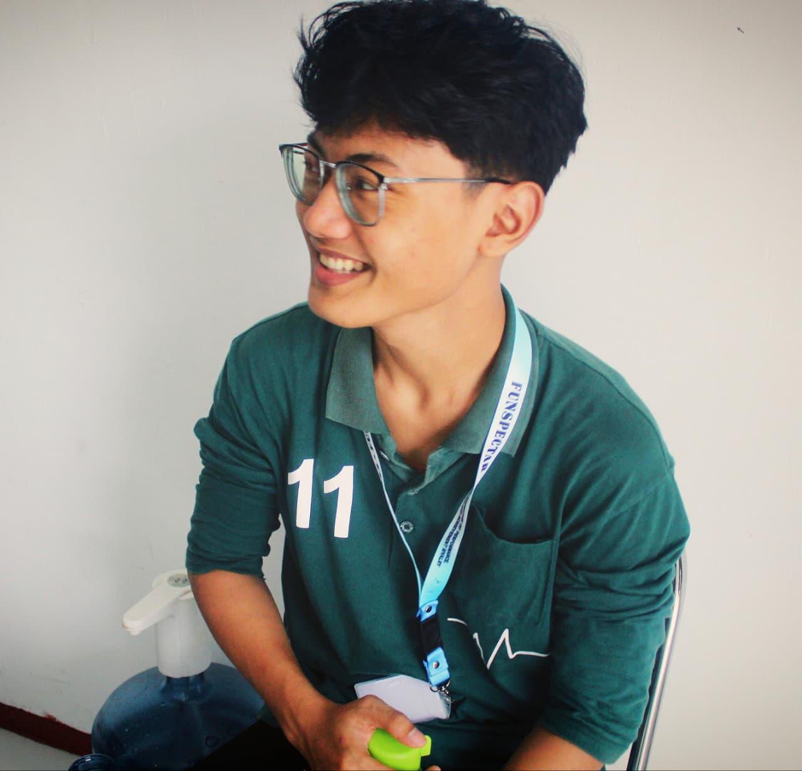

Kenali Gula. Pahami Tubuh. Pilih Lebih Bijak.
Website edukasi untuk membantu remaja mengenal gula, memahami kebiasaan sehari-hari, dan membuat pilihan makanan dan minuman dengan lebih sadar.
Apa yang Bisa Kamu Lakukan?
Gunakan berbagai fitur di website ini untuk belajar, memahami, dan menerapkan informasi tentang gula dalam kehidupan sehari-hari.
Mulai dari Dirimu
Setiap hari kita membuat pilihan tentang apa yang kita makan dan minum. Tapi, seberapa sadar kita terhadap pilihan tersebut?
- Apakah kamu memilih karena lapar atau hanya karena ingin?
- Apakah lingkungan sekitar ikut memengaruhi pilihanmu?
- Seberapa sering kamu memperhatikan apa yang kamu konsumsi?
Yuk, kenali lebih jauh melalui materi edukasi.
Sudah Tahu Apa yang Kamu Konsumsi?
Sekarang coba hitung batas konsumsi gula harianmu dan kenali hasilnya.
🎲 Ayo Main Game!
Kocok dadu, jalan keliling papan, dan kumpulkan Poin Sehat sebanyak-banyaknya. Hati-hati sama kotak jebakan gula!
Setiap kotak punya kejutan: kuis, fakta seru, bonus sehat, atau jebakan gula. Terus jalan sampai keliling papan untuk dapat bonus putaran!
📚 Materi Edukasi
Kenali gula, pahami tubuh, dan jadilah lebih sadar dalam memilih.
Pelajari berbagai hal tentang gula, makanan dan minuman, kesehatan tubuh, serta kebiasaan sehari-hari melalui materi yang sederhana dan mudah dipahami.
🔎 Mau Belajar Apa Hari Ini?
Mulai dari hal paling dasar, lalu lanjutkan ke topik yang membantu kamu memahami hubungan antara gula, tubuh, dan kebiasaan sehari-hari.
📖 Pilih Materi yang Ingin Kamu Pelajari
💡 Bingung Mulai dari Mana?
Jika kamu baru pertama kali belajar tentang gula, disarankan mulai dari Materi 1 dan lanjutkan secara berurutan.
Tapi kamu juga bebas memilih materi yang paling ingin kamu ketahui.
🌱 Setelah Belajar, Lanjutkan ke...
📚 Belajar Hari Ini, Pilih Lebih Sadar Besok
Memahami informasi tentang gula adalah langkah pertama. Setelah memahami, kamu dapat mulai menerapkannya dalam pilihan sehari-hari.
Belajar → Memahami → Menjadi Lebih Sadar
🩺 1 — Mengenal Diabetes Melitus
Diabetes melitus (kencing manis) adalah kondisi ketika kadar gula (glukosa) di dalam darah lebih tinggi dari normal karena tubuh mengalami gangguan dalam memproduksi atau menggunakan insulin — hormon yang bertugas membantu gula darah masuk ke dalam sel untuk dijadikan energi.
💡 Kenapa Penting Dipahami Sejak Dini?
Diabetes melitus bukan hanya satu jenis penyakit. Ada beberapa tipe dengan penyebab yang berbeda-beda, dan tidak semuanya berkaitan dengan pola makan. Dengan mengenali tiap tipenya sejak sekarang, kamu bisa lebih memahami tubuhmu sendiri dan tahu kebiasaan sehat apa yang bisa diterapkan mulai hari ini.
🔎 Kenali 3 Tipe Utama Diabetes Melitus
Ketuk salah satu tipe di bawah untuk melihat penjelasan singkatnya: apa itu, penyebabnya, siapa yang berisiko, dan fakta pentingnya.
👆 Pilih salah satu tipe di atas untuk melihat penjelasannya.
📊 Bandingkan Ketiganya Sekaligus
Kalau mau langsung lihat perbedaannya berdampingan, ini ringkasannya dalam satu tabel.
| 🅰️ Tipe 1 | 🅱️ Tipe 2 | 🤰 Gestasional | |
|---|---|---|---|
| Apa Itu? | Pankreas tidak bisa membuat insulin sama sekali | Insulin tidak digunakan tubuh secara efektif | Diabetes yang baru muncul saat hamil |
| Penyebab | Gangguan sistem imun (autoimun) | Gaya hidup + faktor keturunan | Perubahan hormon kehamilan |
| Siapa Berisiko? | Sering muncul sejak anak-anak/remaja | Makin banyak juga pada remaja saat ini | Ibu hamil, trimester 2–3 |
| Fakta Penting | Butuh suntik insulin seumur hidup | >90% kasus diabetes dunia; bisa dicegah | Biasanya hilang setelah melahirkan |
🚩 Gejala yang Perlu Diwaspadai
Menurut WHO, ada beberapa gejala umum diabetes yang sebaiknya kamu kenali sejak dini:
Punya salah satu gejala di atas bukan berarti pasti diabetes — banyak kondisi lain juga bisa menyebabkan gejala serupa. Tapi kalau gejalanya berlangsung terus-menerus, sebaiknya periksakan ke dokter atau tenaga kesehatan agar dipastikan penyebabnya.
📊 Diabetes dalam Angka
Diabetes bukan masalah kecil — inilah gambarannya berdasarkan data terbaru:
Data ini menunjukkan kenapa pencegahan sejak remaja itu penting — bukan untuk menakuti, tapi supaya kamu bisa mulai membangun kebiasaan sehat dari sekarang.
⚠️ Apa yang Bisa Terjadi Jika Dibiarkan?
Kalau kadar gula darah tinggi dibiarkan dalam waktu lama tanpa penanganan, diabetes bisa merusak berbagai organ tubuh secara perlahan:
Kabar baiknya: komplikasi ini umumnya berkembang perlahan dalam waktu bertahun-tahun, dan risikonya bisa banyak dikurangi lewat deteksi dini serta gaya hidup sehat sejak sekarang — bukan sesuatu yang harus terjadi begitu saja.
Sumber informasi: World Health Organization (WHO) & Kementerian Kesehatan Republik Indonesia. Lihat halaman Referensi untuk detail lengkap.
2 — Konsumsi Makanan Bergizi
Masa remaja adalah masa pertumbuhan pesat. Yuk kenali apa itu makanan bergizi seimbang dan berapa banyak yang sebenarnya dibutuhkan tubuhmu.
🍽️ Apa Itu Gizi Seimbang?
Gizi seimbang adalah susunan makanan sehari-hari yang mengandung zat gizi dalam jenis dan jumlah yang sesuai kebutuhan tubuh. Ada 4 prinsip utama yang perlu diperhatikan bersamaan:
🍽️ Isi Piringku: Panduan Porsi Sekali Makan
Kemenkes RI mengenalkan panduan "Isi Piringku" agar porsi makan lebih mudah diingat dan diikuti.
MAKANAN POKOK
Sumber karbohidrat utama: nasi, jagung, umbi, roti, mi. Porsinya sekitar 2/3 dari setengah piring.
LAUK PAUK
Sumber protein hewani & nabati: ikan, telur, ayam, tahu, tempe. Porsinya sekitar 1/3 dari setengah piring.
SAYUR
Sumber vitamin, mineral, dan serat. Mengisi porsi terbesar pada separuh piring sayur & buah.
BUAH
Pelengkap vitamin, mineral, dan serat, dengan porsi sedikit lebih kecil dari sayur.
Intinya: separuh piring diisi sayur & buah, separuh lagi diisi makanan pokok & lauk pauk. Lengkapi juga dengan minum air putih yang cukup setiap hari.
⚖️ Kenapa Remaja Butuh Gizi Lebih Banyak?
Masa remaja adalah masa pertumbuhan cepat (growth spurt) — tinggi badan, otot, tulang, dan otak berkembang pesat, sehingga kebutuhan energi dan zat gizi meningkat dibanding masa anak-anak.
Angka ini adalah kecukupan rata-rata berdasarkan Angka Kecukupan Gizi (AKG) Kemenkes RI. Kebutuhan tiap orang bisa berbeda tergantung aktivitas — coba hitung perkiraanmu sendiri lewat Kalkulator Sehat.
🦴 Zat Gizi Penting Buat Remaja
Karena itu, remaja putri di Indonesia dianjurkan mengonsumsi Tablet Tambah Darah (TTD) secara rutin sebagai bagian dari program pemerintah untuk mencegah anemia.
🚫 Jangan Lupa, Batasi Gula, Garam & Lemak
Selain mencukupi zat gizi di atas, konsumsi gula, garam, dan lemak berlebih tetap perlu dibatasi setiap hari.
Yuk pelajari lebih lengkap soal gula di Materi 5 — Mengenal, Sumber & Cara Kerja Gula.
Sudah Paham Makanan Bergizi untuk Remaja?
Sekarang, cari tahu bagaimana konsumsi gula berkaitan dengan kesehatan tubuhmu.
Sumber informasi: World Health Organization (WHO) & Kementerian Kesehatan Republik Indonesia. Lihat halaman Referensi untuk detail lengkap.
🌍 Kebiasaan Remaja
Bukan cuma soal rasa manis — banyak hal di sekitar remaja yang memengaruhi pilihan makan dan minum sehari-hari.
Yuk pahami bagaimana teman, media sosial, rutinitas harian, dan kebiasaan kecil bisa memengaruhi seberapa sering kamu mengonsumsi gula tanpa disadari.
📋 Apa yang Akan Kamu Pelajari?
Materi ini membahas 6 hal yang sering memengaruhi kebiasaan makan dan minum remaja sehari-hari.
👥 1. Teman, Nongkrong & Lingkungan
Lingkungan sosial punya pengaruh besar terhadap apa yang kita makan dan minum, termasuk saat berkumpul bersama teman.
Tidak ada yang salah dengan nongkrong bersama teman. Yang penting, kamu tetap bisa membuat pilihan yang sesuai dengan dirimu sendiri.
📱 2. Media Sosial, Makanan Viral & FOMO
Makanan dan minuman yang viral di media sosial dapat memicu rasa penasaran, bahkan tanpa kita sadari alasannya.
Saat mengikuti tren, kita cenderung fokus pada rasa dan tampilan, dan tidak selalu memperhatikan kandungan gula di dalamnya.
💡 Boleh saja ikut coba yang lagi viral. Coba luangkan waktu sebentar untuk melihat kandungannya dulu sebelum memutuskan.
⏰ 3. Jam Rawan & Kebiasaan Ngemil
Ada waktu-waktu tertentu dalam sehari yang sering menjadi momen untuk jajan atau ngemil.
Mengenali jam-jam ini bisa membantumu lebih sadar kapan biasanya kamu tergerak untuk jajan atau ngemil.
🛋️ 4. Mager, Screen Time, dan Aktivitas
Kebiasaan ngemil juga sering berkaitan dengan seberapa aktif kita bergerak dalam sehari.
🔁 5. Frekuensi: "Sedikit tapi Sering"
Saat mengecek kandungan gula, kita sering hanya melihat satu produk saja. Padahal, yang lebih penting adalah total konsumsi sepanjang hari.
Contoh: minuman manis saat sarapan, camilan saat istirahat, minuman kemasan sepulang sekolah, dan makanan penutup saat makan malam. Satu per satu terlihat kecil, tetapi jumlahnya dapat bertambah sepanjang hari.
🧠 6. Kurangnya Kesadaran
Mengetahui informasi tentang gula tidak selalu sama dengan menerapkannya dalam keseharian.
🧠 Tahu ≠ selalu menerapkan. Perubahan kebiasaan biasanya dimulai dari kesadaran akan pola diri sendiri, sedikit demi sedikit.
🌍 Kebiasaan Terbentuk dari Banyak Hal Kecil
Teman, media sosial, rutinitas harian, dan tingkat aktivitas semuanya dapat memengaruhi kebiasaan makan dan minummu. Ini bukan tentang menyalahkan kebiasaan yang sudah ada, tetapi tentang mengenali polanya supaya kamu bisa membuat pilihan yang lebih sadar.
👥 Sadari pengaruh lingkungan sosial.
📱 Bijak menyikapi tren dan FOMO.
⏰ Kenali jam-jam rawanmu sendiri.
📊 Perhatikan total konsumsi, bukan cuma satu produk.
Sudah tahu kebiasaan yang perlu diperhatikan? Yuk, lihat langkah sederhana yang bisa kamu terapkan sehari-hari.
Sumber informasi: World Health Organization (WHO) & Kementerian Kesehatan Republik Indonesia.
3 — Gula dan Kesehatan Tubuh
Kenali perjalanan gula di dalam tubuh dan bagaimana tubuh mengatur glukosa.
Setelah kamu makan atau minum sesuatu yang mengandung gula, apa yang sebenarnya terjadi di dalam tubuhmu?
Yuk, ikuti perjalanannya. ↓
🍬 Perjalanan Gula di Dalam Tubuh
Makanan & Minuman
Gula dan karbohidrat dari makanan atau minuman masuk ke dalam tubuh.
Pencernaan
Karbohidrat dicerna menjadi bentuk yang lebih sederhana, seperti glukosa.
Glukosa dalam Darah
Glukosa masuk ke aliran darah dan dapat digunakan sebagai sumber energi.
Insulin
Insulin membantu glukosa masuk ke dalam sel agar dapat digunakan oleh tubuh.
Sel Menggunakan Glukosa
Glukosa digunakan sebagai salah satu sumber energi oleh sel-sel tubuh.
🩸 Bagaimana Tubuh Menjaga Gula Darah?
Setelah kita mengonsumsi makanan, kadar glukosa dalam darah dapat meningkat. Tubuh memiliki sistem pengaturan untuk membantu menjaga kadar glukosa tetap terkendali.
Glukosa Darah Meningkat
Setelah makan, kadar glukosa dalam darah dapat meningkat.
Pankreas Melepaskan Insulin
Tubuh merespons dengan melepaskan insulin ke dalam darah.
Glukosa Dapat Masuk ke Sel
Insulin membantu membuka jalan agar glukosa dapat masuk ke dalam sel.
Digunakan sebagai Energi
Glukosa yang masuk ke sel digunakan sebagai sumber energi.
Tubuh Mengatur Kadar Glukosa
Melalui proses ini, tubuh membantu menjaga kadar glukosa darah tetap terkendali.
⚠️ Lalu, Apa yang Terjadi Jika Konsumsi Gula Berlebihan?
Konsumsi Gula Berlebihan Terus-Menerus
Jika konsumsi gula berlebihan berlangsung terus-menerus dalam keseharian.
Asupan Energi Dapat Menjadi Berlebihan
Asupan energi dari makanan dan minuman dapat menjadi berlebihan.
Tubuh Terus Mengatur Glukosa
Tubuh terus bekerja mengatur kadar glukosa dalam darah.
Respons terhadap Insulin Dapat Menurun
Dalam kondisi tertentu, respons tubuh terhadap insulin dapat menurun.
Resistensi Insulin
Kondisi ini dikenal sebagai resistensi insulin.
Risiko Gangguan Metabolik Dapat Meningkat
Dalam jangka panjang, risiko gangguan metabolik dapat meningkat.
🧬 Saat Sel Tubuh "Tidak Mau Dengar" Insulin
Bayangkan insulin seperti kunci yang membuka pintu sel supaya glukosa (gula darah) bisa masuk dan diubah jadi energi. Kalau kebiasaan tinggi gula berlangsung terus-menerus, sel-sel tubuh bisa jadi kurang "mendengar" sinyal dari insulin, sehingga glukosa jadi lebih sulit masuk ke dalam sel.
Secara medis, kondisi ini disebut resistensi insulin.
🩺 Jika Pola Ini Berlangsung Terus-Menerus
Konsumsi berlebihan dalam pola makan yang tidak seimbang.
Dapat berkaitan dengan gangguan metabolik.
Peningkatan risiko masalah kesehatan dapat terjadi.
Berat Badan Berlebih
Dapat terjadi ketika asupan energi secara keseluruhan melebihi kebutuhan tubuh dalam jangka panjang.
Gangguan Metabolik
Pola makan dan gaya hidup yang kurang sehat dapat berkaitan dengan gangguan metabolik.
Diabetes Tipe 2
Berbagai faktor berperan terhadap risiko diabetes tipe 2, termasuk pola makan, aktivitas fisik, berat badan, dan faktor lainnya.
🩺 Masalah Kesehatan yang Dapat Berkaitan
Ketuk salah satu topik untuk melihat alurnya. Ingat, ini bukan hubungan sebab-akibat tunggal — banyak faktor lain yang turut berperan.
Konsumsi makanan dan minuman tinggi gula dapat berkontribusi terhadap asupan energi berlebih. Jika berlangsung terus-menerus tanpa diimbangi pengeluaran energi yang cukup, kelebihan energi dapat disimpan sebagai lemak tubuh dan berkontribusi terhadap peningkatan berat badan.
Konsumsi gula berlebih
Asupan energi berlebih
Kelebihan energi disimpan sebagai lemak
Lemak tubuh meningkat
Risiko obesitas meningkat
Gula bukan satu-satunya penyebab obesitas. Pola makan secara keseluruhan, aktivitas fisik, genetik, lingkungan, dan faktor lainnya juga berperan.
Konsumsi gula berlebih dalam pola makan yang menyebabkan kelebihan energi dapat berkontribusi terhadap peningkatan berat badan dan gangguan metabolisme. Dalam jangka panjang, kondisi tersebut dapat berkaitan dengan resistensi insulin dan meningkatkan risiko diabetes melitus tipe 2.
Konsumsi gula/pola makan berlebih
Asupan energi berlebih
Peningkatan lemak tubuh
Resistensi insulin
Pengaturan glukosa terganggu
Glukosa darah meningkat
Diabetes melitus tipe 2
Diabetes melitus tipe 2 dipengaruhi oleh berbagai faktor, bukan hanya konsumsi gula.
Perlemakan hati adalah kondisi ketika lemak menumpuk di dalam hati secara berlebihan.
Konsumsi gula berlebih
Asupan energi berlebih
Peningkatan pembentukan/penyimpanan lemak
Lemak menumpuk di hati
Perlemakan hati
Risiko dapat meningkat terutama dalam konteks pola makan tidak sehat, kelebihan berat badan, dan gangguan metabolik. Tidak semua orang yang mengonsumsi gula akan mengalami perlemakan hati.
Konsumsi gula berlebih, terutama dalam pola makan yang berkontribusi terhadap kelebihan energi dan peningkatan berat badan, dapat berkaitan dengan peningkatan risiko tekanan darah tinggi.
Pola konsumsi gula berlebih
Kelebihan energi
Peningkatan berat badan/gangguan metabolik
Risiko tekanan darah meningkat
Hipertensi
Hipertensi memiliki banyak faktor risiko. Gula bukan satu-satunya penyebab.
Kebiasaan makan tinggi gula bisa membuat berat badan naik dan mengganggu cara tubuh mengatur lemak serta tekanan darah. Lama-kelamaan, pembuluh darah dan jantung jadi bekerja lebih berat dari biasanya.
Secara medis, kumpulan gangguan pada jantung dan pembuluh darah ini disebut penyakit kardiovaskular.
Pola makan tinggi gula
Obesitas/gangguan metabolik
Tekanan darah meningkat/gangguan lemak darah
Gangguan pembuluh darah
Risiko penyakit kardiovaskular meningkat
Contoh: ❤️ Penyakit jantung · 🧠 Stroke
Gula tidak secara langsung menyebabkan serangan jantung atau stroke. Banyak faktor lain yang turut berperan.
⚠️ Kalau Berlangsung Lama dan Tidak Terkontrol
Penyakit kronis
Berlangsung lama
Tidak terkontrol
Kerusakan organ
Komplikasi
Ginjal (Nefropati Diabetik)
Diabetes yang berlangsung lama dan tidak terkontrol dapat merusak pembuluh darah kecil di ginjal, sehingga ginjal jadi lebih sulit menyaring darah dengan baik.
Mata (Retinopati Diabetik)
Kerusakan pembuluh darah akibat diabetes dapat memengaruhi retina mata, bagian mata yang berperan penting supaya kita bisa melihat dengan jelas.
Saraf (Neuropati Diabetik)
Diabetes yang berlangsung lama dapat menyebabkan kerusakan saraf, misalnya membuat tangan atau kaki terasa kesemutan atau mati rasa.
Jantung & Pembuluh Darah
Diabetes dan hipertensi yang tidak terkontrol dapat meningkatkan risiko penyakit jantung dan pembuluh darah.
Komplikasi ini terutama berkaitan dengan penyakit kronis seperti diabetes dan hipertensi yang berlangsung lama dan tidak terkontrol — bukan akibat langsung dari satu kali mengonsumsi gula.
🧠 Jalur yang Perlu Kamu Ingat
Gula berlebih
Kelebihan energi
Peningkatan lemak tubuh
Gangguan metabolisme
Risiko penyakit meningkat
Jika berlangsung lama & tidak terkontrol
Komplikasi
💡 Apa yang Bisa Kamu Lakukan?
Pilih Minuman Lebih Bijak
Utamakan air putih dan batasi minuman berpemanis.
Perhatikan Jumlah dan Frekuensi
Tidak hanya memperhatikan seberapa manis, tetapi juga seberapa sering dikonsumsi.
Perhatikan Pola Makan
Jaga pola makan yang beragam dan seimbang.
Tetap Aktif
Seimbangkan asupan energi dengan aktivitas fisik.
🎯 Sekarang, Kenali Batas Gula Harianmu
Setiap orang memiliki kebutuhan energi yang berbeda. Cari tahu perkiraan kebutuhan energi dan batas konsumsi gula harianmu menggunakan kalkulator.
Sumber informasi: World Health Organization (WHO) & Kementerian Kesehatan Republik Indonesia.
4 — Gula dan Kesehatan Gigi
Bukan cuma seberapa banyak gula yang kamu konsumsi, tapi seberapa sering gigi terpapar gula.
Suka ngemil atau minum manis berkali-kali dalam sehari? Gigi kamu mungkin lebih sering berhadapan dengan gula daripada yang kamu sadari.
🦷 Apa Hubungan Gula dengan Gigi?
Gula dari makanan/minuman masuk ke rongga mulut.
Bakteri pada plak gigi menggunakan gula tersebut.
Bakteri menghasilkan asam.
Permukaan gigi kehilangan mineral.
Jika terjadi berulang, risiko karies meningkat.
Bakteri yang terdapat pada plak gigi dapat memanfaatkan gula yang kita konsumsi dan menghasilkan asam. Paparan asam yang berulang dapat menyebabkan kerusakan pada permukaan gigi dan meningkatkan risiko gigi berlubang.
🔁 Bukan Cuma Jumlahnya, Tapi Seberapa Sering?
Walaupun setiap kali konsumsinya sedikit, paparan gula yang berulang membuat gigi lebih sering menghadapi kondisi yang mendukung pembentukan asam.
⏰ Jam-Jam yang Sering Tidak Disadari
Berapa kali gigi kamu terpapar makanan atau minuman manis dalam sehari?
🥤 Kenapa Minuman Manis Perlu Diperhatikan?
Minum sedikit tetapi berkali-kali tetap berarti gigi mengalami paparan berulang.
📊 Apa yang Membuat Risiko Karies Meningkat?
Risiko karies tidak hanya dipengaruhi oleh satu faktor saja, melainkan kombinasi dari beberapa hal di atas.
🍽️ Makanan Manis Mana yang Perlu Diperhatikan?
- Buah utuh
- Susu tanpa tambahan gula
- Makanan utama yang mengandung karbohidrat
- Biskuit manis
- Kue
- Dessert
- Makanan ringan manis
- Minuman berpemanis
- Minuman kekinian
- Soda
- Teh/kopi dengan gula tambahan
Yang perlu diperhatikan bukan soal boleh atau tidak boleh, tetapi jumlah, frekuensi, dan pola konsumsinya.
🔎 Coba Kenali Pola Konsumsimu
Dalam sehari, kamu biasanya mengonsumsi makanan atau minuman manis berapa kali?
✅ Apa yang Bisa Kamu Lakukan?
🧠 Ingat 3 Hal Ini!
Menjaga kesehatan gigi bukan berarti harus berhenti menikmati makanan manis. Yang penting adalah menjadi lebih sadar terhadap jumlah, frekuensi, dan kebiasaan setelah mengonsumsinya.
Sumber informasi: World Health Organization (WHO) & Kementerian Kesehatan Republik Indonesia.
5 — Mengenal, Sumber & Cara Kerja Gula
Gula bukan cuma soal rasa manis. Yuk kenali apa itu gula, dari mana asalnya, dan bagaimana gula bekerja di dalam tubuh sampai jadi energi.
🍬 Gula Itu Apa, Sih?
Gula adalah salah satu bentuk karbohidrat sederhana. Ada yang alami dari makanan (seperti buah dan susu), ada juga yang ditambahkan ke makanan/minuman.
Jadi, gula bukan sesuatu yang harus selalu dihindari — tubuh tetap butuh energi. Yang penting adalah jumlah dan sumbernya.
🍎 Gula Alami atau Gula Tambahan?
GULA ALAMI
Sudah ada secara alami di bahan makanan.
- Buah
- Susu
GULA TAMBAHAN
Ditambahkan saat makanan/minuman dibuat atau disajikan.
- Gula pada minuman manis
- Gula pada camilan/kue
Jangan cuma lihat rasa manisnya — kenali juga sumber dan jumlah gula yang dikonsumsi.
🍬 Kenali Jenis-Jenis Gula
Glukosa, fruktosa, sukrosa, laktosa — semuanya termasuk "gula", tapi asalnya beda-beda. Ketuk salah satu untuk lihat penjelasan singkatnya.
👆 Pilih salah satu jenis gula di atas untuk melihat penjelasannya.
Intinya: sukrosa, laktosa, dan maltosa itu "gabungan" dari gula-gula yang lebih sederhana seperti glukosa, fruktosa, dan galaktosa.
🛒 Dari Mana Kita Mendapatkan Gula?
SUMBER ALAMI
Buah, susu, dan beberapa bahan pangan tertentu.
MINUMAN
Teh manis, minuman kemasan, soda, minuman kekinian.
CEMILAN
Biskuit, wafer, permen, snack manis.
PRODUK OLAHAN
Roti, sereal, saus, yogurt berperisa.
Beberapa produk tidak terasa sangat manis, tapi tetap bisa mengandung gula. Karena itu, periksa label kemasan.
🔄 Bagaimana Gula Bekerja di Dalam Tubuh?
Karbohidrat dari makanan dicerna jadi gula sederhana, lalu diserap tubuh dan digunakan sebagai energi.
⚡ Gula Sebagai Sumber Energi
Energi dari gula dan makanan lain dipakai tubuh untuk berbagai hal, bahkan saat kamu sedang tidak berolahraga.
BERPIKIR & BELAJAR
Menunjang aktivitas otak.
FUNGSI TUBUH
Bernapas, sirkulasi, kerja organ.
BERAKTIVITAS
Jalan, belajar, aktivitas harian.
BEROLAHRAGA
Aktivitas fisik dan olahraga.
Kalori adalah satuan yang menyatakan jumlah energi dari makanan dan minuman yang kita konsumsi.
⚖️ Tubuh Butuh Keseimbangan Energi
⚡ MASUK ≈ ⚡ DIGUNAKAN
Energi masuk relatif sama dengan energi yang digunakan tubuh.
⚡ MASUK > ⚡ DIGUNAKAN
Kelebihan energi dapat disimpan tubuh dan berkontribusi pada kenaikan berat badan.
⚡ MASUK < ⚡ DIGUNAKAN
Tubuh memiliki lebih sedikit energi yang tersedia.
Kebutuhan energi tiap orang berbeda-beda (dipengaruhi usia, berat badan, tinggi badan, dan aktivitas).
🎯 Berapa Energi yang Kamu Butuhkan?
Coba hitung perkiraan kebutuhan energi harian dan batas konsumsi gulamu.
Sumber informasi: World Health Organization (WHO) & Kementerian Kesehatan Republik Indonesia.
Kalkulator Sehat
Kenali kebutuhan energimu dan cari tahu batas konsumsi gula harianmu.
Masukkan beberapa data sederhana tentang dirimu. Hasil yang ditampilkan merupakan perkiraan berdasarkan data yang kamu masukkan.
Siapa kamu?
TIPS SEHAT
Yuk mulai dari kebiasaan kecil untuk membantu menjaga konsumsi gula tetap sehat!
Setelah mengetahui batas konsumsi gula harianmu, sekarang saatnya menerapkannya dalam kehidupan sehari-hari.
Ingin tahu alasan di balik tips ini?
🏃 Aktivitas Fisik yang Cukup
Gerak setiap hari itu investasi buat kesehatanmu sekarang dan nanti.
Duduk lama di depan HP atau laptop itu wajar sesekali, tapi tubuh kita sebenarnya dirancang untuk banyak bergerak. Yuk cari tahu kenapa aktivitas fisik penting dan berapa banyak yang sebenarnya kamu butuhkan.
🤔 Kenapa Tubuh Kita Perlu Banyak Bergerak?
Saat kamu bergerak, otot memakai gula darah (glukosa) sebagai sumber energi. Ini membantu tubuh lebih peka terhadap hormon insulin, sehingga gula darah lebih mudah terkontrol. Sebaliknya, kalau kita kebanyakan duduk atau rebahan (perilaku sedentari), energi dari makanan lebih gampang menumpuk jadi lemak tubuh. Lama-lama, kebiasaan ini bisa meningkatkan risiko kegemukan (obesitas) dan diabetes tipe 2 — bahkan sejak usia remaja.
Penelitian jangka panjang pada anak dan remaja menunjukkan bahwa semakin sedikit aktivitas fisik dan semakin banyak waktu duduk/menatap layar, semakin besar risiko kenaikan IMT dan gangguan gula darah di kemudian hari. Lihat halaman Referensi untuk detail penelitiannya.
⏱️ Berapa Lama Sebaiknya Bergerak Setiap Hari?
⏱️ Rata-rata 60 menit per hari aktivitas fisik sedang–berat, dihitung setiap minggu.
Menurut pedoman WHO untuk anak dan remaja usia 5–17 tahun, kamu disarankan bergerak dengan intensitas sedang sampai berat rata-rata 60 menit setiap hari (dihitung total dalam seminggu), ditambah aktivitas yang menguatkan otot dan tulang minimal 3 hari per minggu.
Belum terbiasa bergerak 60 menit sehari? Tidak apa-apa, mulai dari yang sedikit dulu. Sedikit aktivitas fisik tetap lebih baik daripada tidak sama sekali — tingkatkan pelan-pelan durasi dan intensitasnya.
🏆 Contoh Olahraga yang Direkomendasikan
Kamu tidak harus pilih satu jenis olahraga saja. Variasi gerakan membuat latihan lebih seru sekaligus melatih tubuh secara menyeluruh — kombinasi aerobik dan penguatan otot/tulang.
⚖️ Aktivitas Fisik & Pencegahan Obesitas
Sederhananya, berat badan berlebih terjadi kalau energi yang masuk dari makanan dan minuman lebih banyak dan lebih lama dibanding energi yang digunakan tubuh. Aktivitas fisik teratur membantu menyeimbangkan energi tersebut, menjaga massa otot, memperbaiki suasana hati, dan membuat tidur lebih berkualitas — semuanya berperan dalam mencegah obesitas.
Obesitas bukan hanya soal kurang gerak. Pola makan, jumlah tidur, genetik, dan lingkungan juga ikut berperan. Karena itu, aktivitas fisik sebaiknya dijalankan bersama pola makan gizi seimbang, bukan sebagai satu-satunya solusi.
📏 Pentingnya Tahu IMT (Indeks Massa Tubuh)
IMT adalah cara sederhana untuk memperkirakan apakah berat badan seseorang sesuai dengan tinggi badannya. Rumusnya:
RUMUS IMT
IMT = Berat Badan (kg) ÷ [Tinggi Badan (m) × Tinggi Badan (m)]
Karena tubuh remaja masih tumbuh, hasil IMT tidak dibaca sama seperti orang dewasa. Untuk usia 5–18 tahun, hasil IMT dibandingkan dengan standar IMT menurut umur (IMT/U) dari Kementerian Kesehatan RI:
Mengetahui IMT secara berkala membantu mendeteksi risiko gizi lebih, obesitas, atau gizi kurang sejak dini, sehingga bisa segera ditangani bersama orang tua, guru, atau tenaga kesehatan. Kamu bisa coba hitung perkiraan kebutuhan energi harianmu di menu Kalkulator Sehat.
🧠 Cek Pemahamanmu
Menurutmu, berapa lama sebaiknya remaja beraktivitas fisik sedang–berat setiap hari (rata-rata per minggu)?
🧐 Mitos atau Fakta?
🎯 Coba Hari Ini!
Pilih satu aktivitas fisik minimal 15–30 menit hari ini.
🏃 Jalan cepat, main bola, menari, atau naik-turun tangga — pilih salah satu dan coba hari ini.
🏃 Ingat!
Tidak perlu sempurna dari hari pertama.
Yang penting mulai bergerak lebih banyak, kurangi waktu duduk terlalu lama, dan jadikan aktivitas fisik sebagai kebiasaan sehari-hari — bukan hanya saat pelajaran olahraga.
Sumber informasi: World Health Organization (WHO) 2020 Guidelines on Physical Activity and Sedentary Behaviour & Peraturan Menteri Kesehatan RI Nomor 2 Tahun 2020 tentang Standar Antropometri Anak. Lihat halaman Referensi untuk detail lengkap.
🩺 Skrining Kesehatan
Cek dari sekarang, sebelum ada keluhan.
Banyak gangguan kesehatan, termasuk risiko diabetes, tidak selalu menimbulkan gejala di awal. Skrining kesehatan rutin membantu mendeteksinya lebih dini, supaya bisa segera ditangani.
🔍 Kenapa Skrining Kesehatan Penting untuk Remaja?
Skrining kesehatan adalah pemeriksaan untuk mengetahui kondisi tubuhmu, meskipun kamu merasa sehat-sehat saja. Tujuannya bukan untuk mencari-cari penyakit, tapi untuk mengenali risiko sejak dini — misalnya gizi lebih, tekanan darah tinggi, atau gula darah yang mulai naik — sebelum berkembang jadi masalah yang lebih serius seperti diabetes tipe 2.
Ingat menu Aktivitas Fisik dan IMT sebelumnya? Skrining rutin melengkapi usahamu menjaga pola makan dan gerak tubuh, dengan memastikan kondisi kesehatanmu benar-benar terpantau, bukan cuma diperkirakan.
📋 Apa Saja yang Sebaiknya Dicek Secara Rutin?
Menurut anjuran WHO dan Kementerian Kesehatan RI, beberapa pemeriksaan berikut penting dilakukan secara berkala pada usia remaja. Ketuk salah satu untuk melihat frekuensi dan kondisi normalnya:
👆 Pilih salah satu pemeriksaan di atas untuk melihat detailnya.
⚠️ Jika salah satu hasil pemeriksaanmu berada di luar rentang normal, jangan panik dan jangan simpulkan sendiri. Segera sampaikan ke orang tua dan periksakan lebih lanjut ke dokter atau tenaga kesehatan, agar penanganannya tepat dan sesuai anjuran.
Pemeriksaan gula darah secara berkala penting terutama bagi remaja dengan berat badan berlebih, karena diabetes tipe 2 pada remaja seringkali tidak bergejala di tahap awal.
🇮🇩 Mengenal Program Cek Kesehatan Gratis (CKG)
Cek Kesehatan Gratis (CKG) adalah program nasional dari Kementerian Kesehatan RI yang memberikan pemeriksaan kesehatan gratis untuk seluruh warga Indonesia, mulai dari bayi baru lahir sampai lansia — termasuk anak usia sekolah dan remaja usia 7–17 tahun.
Untuk siswa SD, SMP, SMA/SMK, madrasah, hingga pesantren, pemeriksaan dilakukan langsung di sekolah pada tahun ajaran baru (sekitar bulan Juli), lewat jalur yang disebut CKG Sekolah. Tim dari Puskesmas datang ke sekolah, dibantu guru UKS dan guru olahraga.
Untuk informasi lebih lanjut, kamu atau orang tua bisa menghubungi Puskesmas terdekat, membuka ayockg.kemkes.go.id, atau hotline Halo Kemenkes di 1500-567.
🩺 Apa Saja yang Diperiksa Saat CKG di Sekolah?
Jenis pemeriksaan disesuaikan dengan jenjang sekolah. Untuk siswa SMP (usia 13–15 tahun), ada 15 jenis pemeriksaan:
Cek gula darah termasuk salah satu pemeriksaan penting di sini — ini bagian dari upaya mendeteksi risiko diabetes sejak usia remaja, bukan cuma untuk orang dewasa.
✅ Yang Perlu Disiapkan Sebelum Pemeriksaan
Untuk cek darah, biasanya hanya diambil sedikit dari ujung jari (bukan disuntik dari lengan), jadi tidak perlu khawatir berlebihan.
🧠 Cek Pemahamanmu
Kenapa penting mengisi formulir skrining kesehatan dengan jujur sebelum pemeriksaan CKG di sekolah?
🧐 Mitos atau Fakta?
🎯 Coba Hari Ini!
Cari tahu satu hal tentang riwayat kesehatanmu sendiri.
🩺 Tanyakan ke guru UKS, wali kelas, atau orang tuamu: kapan jadwal Cek Kesehatan Gratis di sekolahmu, atau bagaimana hasil pemeriksaan kesehatanmu yang terakhir.
🩺 Ingat!
Skrining bukan untuk menakut-nakuti.
Skrining kesehatan rutin — termasuk lewat Cek Kesehatan Gratis di sekolah — adalah cara sederhana untuk mengenali kondisi tubuhmu lebih awal, supaya risiko seperti diabetes bisa dicegah atau ditangani sebelum menjadi masalah besar.
Sumber informasi: World Health Organization (WHO) & Kementerian Kesehatan RI — Program Cek Kesehatan Gratis (CKG) dan CKG Sekolah. Lihat halaman Referensi untuk detail lengkap.
🔍 Kenali Gula Tersembunyi
Rasanya tidak selalu manis, tapi apakah kamu tahu kandungannya?
Gula tidak hanya ditemukan pada permen, cokelat, atau minuman manis. Beberapa makanan dan minuman kemasan juga dapat mengandung free sugars.
👀 Apa Maksudnya Gula Tersembunyi?
Istilah "gula tersembunyi" di halaman ini digunakan untuk menggambarkan gula yang mungkin tidak langsung disadari oleh kita karena terdapat dalam makanan atau minuman yang tidak selalu terasa sangat manis.
Rasa dapat membantu kita menikmati makanan, tetapi label membantu kita mengetahui informasi kandungan produk. Ini bukan berarti gula tersebut benar-benar disembunyikan — cara terbaik untuk mengetahuinya adalah dengan melihat informasi pada label pangan.
🔍 Coba Tebak, Ada di Mana?
Klik salah satu makanan/minuman berikut ini.
🤔 Kalau Tidak Terlalu Manis, Berarti Gulanya Sedikit?
Apakah rasa makanan saja cukup untuk mengetahui kandungan gulanya?
🔍 Jadilah detektif label!
🍎 Apakah Semua Gula Itu Sama?
🍎 BUAH UTUH ≠ FREE SUGARS
Buah utuh tetap mengandung gula alami, tetapi gula tersebut tidak termasuk free sugars menurut definisi WHO.
🏷️ Jangan Hanya Melihat Bagian Depan Kemasan
INFORMASI NILAI GIZI
Gula: — (periksa label asli produk)
DAFTAR BAHAN
Susu, gula, perisa buah, pengental.
Bagian depan kemasan dapat menarik perhatian dengan rasa, gambar, atau klaim tertentu. Untuk mengetahui kandungan produk, biasakan melihat informasi nilai gizi dan daftar bahan. Jangan hanya mengandalkan bagian depan kemasan.
🕵️ Jadi Detektif Gula!
DAFTAR BAHAN
Susu, tepung, gula, minyak nabati, kakao, sirup, perisa.
Coba cari bahan yang menunjukkan adanya gula tambahan.
Pada daftar bahan, bahan biasanya dicantumkan berdasarkan jumlahnya dari yang lebih banyak ke yang lebih sedikit pada awal daftar. Namun, satu produk dapat menggunakan berbagai istilah bahan yang berkaitan dengan gula.
🏷️ Yuk Coba Baca Label!
INFORMASI NILAI GIZI
Takaran saji: 30 gram
Jumlah sajian: 2
Gula: 8 gram per sajian
Kalau kamu ingin mengetahui kandungan gula produk, bagian mana yang perlu diperhatikan?
🧐 Mitos atau Fakta?
🕵️ Jadi Detektif Gula dalam 3 Langkah
🎯 Coba Hari Ini!
Saat membeli makanan atau minuman kemasan hari ini, coba lakukan satu hal sederhana.
🔍 Lihat bagian informasi nilai gizi sebelum membeli.
🔍 Ingat!
Jangan hanya menilai makanan dari rasanya atau tampilan kemasannya.
Biasakan melihat informasi nilai gizi dan daftar bahan agar kamu dapat membuat pilihan dengan lebih sadar. Menjadi lebih sehat bukan berarti harus takut pada makanan — belajar memahami makanan adalah langkah pertama untuk membuat pilihan yang lebih bijak.
Sumber informasi: World Health Organization (WHO) & Kementerian Kesehatan Republik Indonesia.
🏷️ Cara Membaca Label Pangan
Jangan cuma lihat kemasannya, yuk belajar membaca informasinya!
Label pangan membantu kita mengetahui informasi tentang makanan dan minuman yang kita beli. Dengan memahami beberapa bagian penting pada label, kita bisa membuat pilihan dengan lebih sadar.
🔍 Kenapa Kita Perlu Membaca Label?
Jangan hanya melihat gambar atau tulisan promosi pada bagian depan kemasan.
👀 Jangan Hanya Melihat Bagian Depan
Bagian depan kemasan biasanya dibuat agar menarik perhatian. Untuk mengetahui informasi yang lebih lengkap, lihat bagian belakang atau samping kemasan.
+
DAFTAR BAHAN
🥄 1. Perhatikan Takaran Saji
Takaran saji adalah jumlah makanan atau minuman yang digunakan sebagai dasar informasi nilai gizi pada label.
INFORMASI NILAI GIZI
Takaran saji: 30 gram
Angka kandungan gizi yang tercantum pada label biasanya mengacu pada satu takaran saji.
🍪 1 takaran saji = 30 gram
Takaran saji bukan selalu berarti seluruh isi kemasan.
📦 2. Lihat Jumlah Sajian per Kemasan
Beberapa kemasan berisi lebih dari satu takaran saji.
Takaran saji: 30 gram
Jumlah sajian per kemasan: 2
Jika kamu menghabiskan seluruh kemasan, berarti kamu mengonsumsi 2 takaran saji.
Jadi, jangan hanya melihat angka per sajian. Perhatikan juga berapa banyak sajian dalam satu kemasan.
🍬 3. Cari Informasi Gula
INFORMASI NILAI GIZI
Takaran saji: 30 gram
Jumlah sajian per kemasan: 2
Gula: 8 gram
Informasi ini menunjukkan jumlah gula pada satu takaran saji sesuai dengan contoh label.
Jika satu kemasan memiliki 2 sajian dan kamu menghabiskan seluruh kemasan, berarti kamu mengonsumsi dua kali jumlah gula per sajian.
📝 4. Lihat Daftar Bahan
Daftar bahan menunjukkan bahan-bahan yang digunakan dalam suatu produk.
BAHAN
Susu, tepung, gula, minyak nabati, kakao, sirup, perisa.
Daftar bahan dapat membantu kita mengenali bahan yang digunakan dalam produk. Beberapa bahan yang berkaitan dengan gula dapat memiliki nama yang berbeda, seperti gula, sirup, madu, dan bahan pemanis lainnya.
Gunakan daftar bahan sebagai informasi tambahan bersama dengan informasi nilai gizi.
🧠 Ingat 4 Hal Ini!
📋 Yuk Lihat Satu Contoh
INFORMASI NILAI GIZI
Takaran saji : 30 gram
Jumlah sajian : 2
Energi : 140 kkal
Lemak : 5 gram
Karbohidrat : 20 gram
Gula : 8 gram
Protein : 3 gram
DAFTAR BAHAN
Tepung, susu, gula, minyak nabati, kakao, sirup, perisa.
APA YANG BISA KITA LIHAT?
✓ Takaran saji = 30 gram
✓ Satu kemasan = 2 sajian
✓ Gula = 8 gram per sajian
✓ Ada gula dan sirup pada daftar bahan
Contoh label di atas adalah simulasi untuk pembelajaran dan bukan label produk nyata.
🥤 Label Asli: Minuman Manis yang Sering Kita Temui
Contoh sebelumnya adalah simulasi. Sekarang coba lihat angka pada label lima minuman manis kemasan yang biasa dijual di sekitar kita — datanya diambil langsung dari informasi nilai gizi pada kemasan masing-masing produk.
TEH BOTOL SOSRO — 350 ml
Energi: 110 kkal
Protein: 0 g
Lemak: 0 g
Karbohidrat: 28 g
Gula ≈ 28 g
Natrium: 75 mg
POCARI SWEAT — 350 ml
Energi: 90 kkal
Protein: 0 g
Lemak: 0 g
Karbohidrat: 21 g
Gula: 21 g
Natrium: 170 mg
COCA-COLA — kaleng 250 ml
Energi: ±108 kkal
Protein: 0 g
Lemak: 0 g
Karbohidrat: 27 g
Gula: 27 g
Natrium: ±15 mg
FRESTEA GREEN TEA — 500 ml (2 sajian)
Per sajian (250 ml): ±80 kkal
Karbohidrat per sajian: 20 g
Habis 1 botol ≈ 40 g karbohidrat
Karena 1 botol = 2 takaran saji
SPRITE — kaleng 250 ml
Energi: 100 kkal
Protein: 0 g
Lemak: 0 g
Karbohidrat: 25 g
Gula ≈ 25 g
Natrium: 40 mg
Batas gula tambahan harian yang disarankan sekitar 50 gram (4 sendok makan). Artinya, satu botol Teh Botol Sosro atau satu kaleng Coca-Cola saja sudah menyumbang lebih dari separuh batas itu — dan kalau keduanya diminum di hari yang sama, totalnya (28 g + 27 g = 55 g) sudah melebihi batas harian.
Angka pada kemasan bisa berubah sewaktu-waktu karena produsen melakukan reformulasi produk. Selalu cek label fisik pada kemasan yang kamu beli sebagai rujukan paling akurat.
🛒 Saat Membeli, Lakukan 3 Langkah
JANGAN CUMA LIHAT DEPAN KEMASAN.
Biasakan melihat:
🥄 Takaran saji
📦 Jumlah sajian
🍬 Kandungan gula
📝 Daftar bahan
Semakin terbiasa membaca label, semakin mudah kamu memahami makanan dan minuman yang kamu pilih.
🏷️ Jadilah Pembeli yang Cerdas!
Label pangan bukan untuk membuatmu takut memilih makanan. Label membantu memberikan informasi agar kamu bisa membuat pilihan dengan lebih sadar.
Mulai dari satu kebiasaan sederhana: lihat label sebelum membeli.
Sumber informasi: Kementerian Kesehatan Republik Indonesia, BPOM RI, dan World Health Organization (WHO).
💧 Ganti Kebiasaan Kecil
Perubahan besar bisa dimulai dari satu kebiasaan sederhana.
Kamu tidak harus mengubah semua kebiasaan sekaligus. Mulailah dari satu hal kecil yang bisa dilakukan secara konsisten.
🥤🍪 Kenapa Minuman Manis & Camilan Perlu Diperhatikan?
Minuman manis (soda, teh manis, minuman kekinian) dan camilan manis (permen, donat, biskuit) sama-sama bisa jadi sumber gula tambahan yang sering tidak kita sadari.
Intinya bukan melarang semua yang manis, tapi belajar memperhatikan jumlah, frekuensi, dan kandungan gulanya.
🌱 Tidak Perlu Mengubah Semuanya Sekaligus
Perubahan kebiasaan membutuhkan waktu. Kamu bisa memilih satu kebiasaan yang terasa paling mudah dilakukan terlebih dahulu.
🥤 Minuman Manis: Kurangi Sedikit demi Sedikit
Minuman manis (soda, teh manis, jus kemasan, minuman kekinian) mengandung gula tambahan. Kalau diminum tiap hari, gula yang masuk bisa jadi banyak tanpa kamu sadari — dan bisa bikin gigi berlubang.
🍎 Camilan: Pilih dengan Bijak
Camilan seperti buah, kacang, atau jagung bisa lebih sering dipilih. Camilan manis seperti permen, donat, atau biskuit boleh dimakan sesekali, asal tidak berlebihan dan tidak setiap hari.
💡 Kebiasaan Kecil Lainnya
📈 Perubahan Bisa Dilakukan Bertahap
Sering memilih minuman/camilan manis tanpa dipikir. → MULAI
Coba pilih air putih & cek label sebelum membeli. → TERBIASA
Air putih & camilan sehat jadi pilihan utama.
😊 Kalau Hari Ini Belum Berhasil?
Tenang. Membentuk kebiasaan memang membutuhkan waktu.
1. Tidak perlu merasa bersalah.
2. Coba lagi pada kesempatan berikutnya.
3. Fokus pada satu perubahan kecil.
😊 Satu hari yang berbeda tidak berarti semua usaha menjadi sia-sia.
🌱 Mulai dari Mana?
Kamu tidak perlu melakukan semuanya sekaligus. Pilih satu kebiasaan yang paling mudah kamu mulai.
📝 Ingat 5 Hal Ini
☐ Pilih air putih lebih sering
☐ Kurangi minuman berpemanis secara bertahap
☐ Variasikan pilihan camilan
☐ Biasakan membaca label pangan
☐ Mulai dari satu kebiasaan kecil
🌱 Mulai dari Hal Kecil
Kamu tidak harus langsung mengubah semuanya.
Mulailah dari satu kebiasaan kecil yang bisa kamu lakukan hari ini. Sedikit demi sedikit, pilihan yang lebih baik dapat menjadi bagian dari keseharianmu.
Sumber informasi: World Health Organization (WHO) & Kementerian Kesehatan Republik Indonesia.
🎒 Tips Sehat di Sekolah
Sehat itu bisa dimulai dari pilihan kecil saat berada di sekolah.
Seharian di sekolah membuat kita sering memilih makanan dan minuman. Yuk, gunakan kebiasaan sederhana untuk membuat pilihan yang lebih bijak.
🌅 Sebelum Berangkat Sekolah
Kebiasaan sehat bisa dimulai bahkan sebelum sampai di sekolah.
🔔 Saat Jam Istirahat
🛒 Cerdas Memilih di Kantin
Sebelum membeli, coba ikuti langkah sederhana ini:
🥤🍎 Contoh Pilihan Sehari-hari
Saat haus:
Air putih dapat menjadi pilihan utama untuk memenuhi kebutuhan cairan tanpa tambahan gula.
Saat ingin camilan:
Buah dapat menjadi salah satu pilihan camilan yang menyediakan zat gizi seperti vitamin, mineral, serat, dan air.
Saat membeli produk kemasan:
Melihat label dapat membantu kamu mengetahui informasi produk sebelum memilih.
Saat memilih minuman:
Minuman berpemanis tidak harus selalu dihindari, tetapi sebaiknya diperhatikan jumlah dan frekuensinya.
👥 Bagaimana Kalau Temanmu Membeli Minuman Manis?
Kamu mungkin melihat teman membeli minuman manis atau jajanan tertentu. Kamu tidak harus mengikuti semua pilihan teman.
😊 Menjadi sehat bukan berarti harus menyuruh orang lain mengikuti pilihanmu.
🎉 Saat Ada Acara atau Perayaan
Di sekolah terkadang ada acara, ulang tahun, kegiatan kelas, atau perayaan yang menyediakan makanan dan minuman.
🍰 Makan sehat bukan berarti tidak boleh menikmati makanan.
🌱 5 Kebiasaan Sederhana
☐ Membawa air putih
☐ Memilih air putih saat haus
☐ Tidak selalu memilih camilan manis
☐ Membaca label makanan/minuman kemasan
☐ Memperhatikan jumlah dan frekuensi konsumsi
🎒 Contoh Sehari di Sekolah
Ini hanya contoh. Setiap siswa memiliki jadwal dan kebiasaan yang berbeda.
💚 Tidak Harus Sempurna
Sehat bukan berarti harus selalu memilih makanan yang sempurna.
Ada kalanya kamu minum minuman manis, makan camilan, atau menikmati makanan saat acara sekolah. Itu tidak berarti semua usaha menjadi sia-sia. Yang penting adalah membangun kebiasaan yang lebih baik secara bertahap.
🎒 6 Tips yang Bisa Kamu Ingat
🌱 Sehat Dimulai dari Pilihan Kecil
Kamu sudah belajar tentang minuman manis, camilan, gula tersembunyi, label pangan, dan kebiasaan sehat.
Sekarang, coba terapkan satu hal kecil yang paling mudah kamu lakukan.
💧 Pilih air putih lebih sering.
🍎 Variasikan camilan.
🏷️ Baca label sebelum membeli.
🌱 Lakukan secara bertahap.
Sudah selesai mempelajari Tips Sehat?
Sumber informasi: World Health Organization (WHO), Kementerian Kesehatan Republik Indonesia, dan BPOM RI.
Tentang Website
Kenali lebih jauh media edukasi ini dan siapa yang mengembangkannya.
📖 Tentang Media
Website ini dikembangkan sebagai media edukasi mengenai konsumsi gula dan pencegahan diabetes melitus pada remaja, khususnya siswa SMP. Melalui materi edukasi, kalkulator kebutuhan gula harian, dan tips praktis, website ini bertujuan membantu siswa mengenali kandungan gula dalam makanan dan minuman sehari-hari serta membentuk kebiasaan konsumsi yang lebih sehat sebagai langkah pencegahan dini diabetes melitus.
👤 Tentang Pengembang

Dimas AfifMurtadho
Mahasiswa Program Studi Sarjana Terapan Keperawatan
Poltekkes Kemenkes Kaltim
- Dikembangkan oleh
- Dimas AfifMurtadho
- Program Studi
- Sarjana Terapan Keperawatan
- Institusi
- Politeknik Kesehatan Kementerian Kesehatan Kalimantan Timur
- Tahun
- 2026
💬 Kritik & Saran
Punya masukan tentang website ini? Yuk sampaikan kritik dan saranmu, akan sangat membantu untuk pengembangan media edukasi ini ke depannya.
Referensi
Sumber rujukan yang digunakan dalam penyusunan materi edukasi ini.
🌐 World Health Organization (WHO)
- World Health Organization. (2015). Guideline: Sugars intake for adults and children. Geneva: WHO. iris.who.int/handle/10665/149782
- World Health Organization. (2024). Diabetes [Fact sheet]. who.int/news-room/fact-sheets/detail/diabetes — digunakan sebagai rujukan materi "Mengenal Diabetes Melitus" (gejala umum diabetes serta risiko komplikasi jangka panjang pada jantung, mata, ginjal, dan saraf).
- World Health Organization, Regional Office for South-East Asia. Diabetes [Fact sheet]. cdn.who.int (WHO SEARO) — digunakan sebagai rujukan materi "Mengenal Diabetes Melitus" (klasifikasi tipe 1, tipe 2, dan diabetes gestasional).
- World Health Organization. (1995). Physical status: the use and interpretation of anthropometry. Report of a WHO Expert Committee. Geneva: WHO. who.int (Body Mass Index) — digunakan sebagai rujukan rumus dan kategori Indeks Massa Tubuh (IMT) pada Kalkulator Sehat.
- World Health Organization. (2020). WHO Guidelines on Physical Activity and Sedentary Behaviour. Geneva: WHO. ncbi.nlm.nih.gov/books/NBK566046 — digunakan sebagai rujukan materi "Aktivitas Fisik yang Cukup" (rekomendasi 60 menit aktivitas sedang–berat per hari serta penguatan otot dan tulang minimal 3 hari per minggu untuk usia 5–17 tahun).
- World Health Organization. Healthy Diet [Fact sheet]. who.int/news-room/fact-sheets/detail/healthy-diet — digunakan sebagai rujukan materi "Konsumsi Makanan Bergizi" (prinsip pola makan beragam, seimbang, dan batas asupan lemak serta gula tambahan).
🇮🇩 Kementerian Kesehatan RI & BPOM
- Kementerian Kesehatan RI. (2013). Peraturan Menteri Kesehatan Nomor 30 Tahun 2013 tentang Pencantuman Informasi Kandungan Gula, Garam, dan Lemak serta Pesan Kesehatan untuk Pangan Olahan dan Pangan Siap Saji.
- Kementerian Kesehatan RI. (2014). Peraturan Menteri Kesehatan Nomor 41 Tahun 2014 tentang Pedoman Gizi Seimbang. — digunakan sebagai rujukan proporsi kebutuhan karbohidrat harian pada Kalkulator Sehat, serta rujukan 4 pilar gizi seimbang dan panduan porsi "Isi Piringku" pada materi "Konsumsi Makanan Bergizi".
- Kementerian Kesehatan RI. (2019). Peraturan Menteri Kesehatan Nomor 28 Tahun 2019 tentang Angka Kecukupan Gizi yang Dianjurkan untuk Masyarakat Indonesia. peraturan.bpk.go.id — digunakan sebagai rujukan angka kecukupan energi, protein, kalsium, dan zat besi remaja pada materi "Konsumsi Makanan Bergizi".
- Badan Pengawas Obat dan Makanan RI. (2021). Peraturan BPOM Nomor 26 Tahun 2021 tentang Informasi Nilai Gizi pada Label Pangan Olahan.
- Kementerian Kesehatan RI. (2024). Cegah Meningkatnya Diabetes, Jangan Berlebihan Konsumsi Gula, Garam, Lemak. kemkes.go.id
- Kementerian Kesehatan RI. Mari Kenali Diabetes Melitus. keslan.kemkes.go.id — digunakan sebagai rujukan materi "Mengenal Diabetes Melitus" (klasifikasi tipe 1, tipe 2, dan diabetes gestasional).
- Kementerian Kesehatan RI. (2020). Peraturan Menteri Kesehatan Nomor 2 Tahun 2020 tentang Standar Antropometri Anak. — digunakan sebagai rujukan kategori dan ambang batas status gizi berdasarkan Indeks Massa Tubuh menurut Umur (IMT/U) usia 5–18 tahun pada materi "Aktivitas Fisik yang Cukup".
- Kementerian Kesehatan RI. Cek Kesehatan Gratis (CKG) [Laman resmi]. ayosehat.kemkes.go.id/diet-sehat/cek-kesehatan-gratis — digunakan sebagai rujukan materi "Skrining Kesehatan" mengenai gambaran umum Program Cek Kesehatan Gratis.
- Kementerian Kesehatan RI. (2025). Cek Kesehatan Gratis di Sekolah Bakal Dimulai. kemkes.go.id — digunakan sebagai rujukan materi "Skrining Kesehatan" mengenai pelaksanaan dan persiapan CKG Sekolah.
- Sekretariat Negara Republik Indonesia. (2025). Resmi Diluncurkan, Inilah Jenis Pemeriksaan Kesehatan pada CKG Sekolah. setneg.go.id — digunakan sebagai rujukan daftar jenis pemeriksaan CKG untuk siswa SD, SMP, dan SMA/sederajat pada materi "Skrining Kesehatan".
- Kementerian Kesehatan RI. (2026). Keputusan Menteri Kesehatan Nomor HK.01.07/MENKES/302/2026 tentang Pedoman Nasional Pelayanan Kedokteran Tata Laksana Diabetes Melitus. keslan.kemkes.go.id — digunakan sebagai rujukan nilai normal gula darah puasa dan gula darah sewaktu pada materi "Skrining Kesehatan".
🏃 Jurnal Aktivitas Fisik & Pencegahan Obesitas
- Bull, F. C., Al-Ansari, S. S., Biddle, S., et al. (2020). World Health Organization 2020 guidelines on physical activity and sedentary behaviour. British Journal of Sports Medicine, 54(24), 1451–1462. pubmed.ncbi.nlm.nih.gov/33239350
- Chaput, J. P., Willumsen, J., Bull, F., et al. (2020). 2020 WHO guidelines on physical activity and sedentary behaviour for children and adolescents aged 5–17 years: summary of the evidence. International Journal of Behavioral Nutrition and Physical Activity, 17, 141. link.springer.com
- Henderson, M., Van Hulst, A., Barnett, T. A., et al. (2022). Estimating causal effects of physical activity and sedentary behaviours on the development of type 2 diabetes in at-risk children from childhood to late adolescence: an analysis of the QUALITY cohort. The Lancet Child & Adolescent Health, 6(11), 738–746.
- Lee, P. H. (2014). Association between adolescents' physical activity and sedentary behaviors with change in BMI and risk of type 2 diabetes. PLOS ONE, 9(10), e110732. ncbi.nlm.nih.gov/pmc/articles/PMC4207744
- The Association Between Physical Activity and Obesity: A Systematic Review. pmc.ncbi.nlm.nih.gov/articles/PMC12790858 — digunakan sebagai rujukan hubungan aktivitas fisik dengan pencegahan obesitas.
Kumpulan jurnal di atas digunakan sebagai rujukan materi "Aktivitas Fisik yang Cukup", termasuk rekomendasi durasi aktivitas fisik, hubungan aktivitas fisik dengan pencegahan obesitas, dan hubungan aktivitas fisik/perilaku sedentari dengan risiko diabetes tipe 2 pada remaja.
📚 Sumber Pendukung Lain
- International Diabetes Federation. (2025). IDF Diabetes Atlas (11th ed.). diabetesatlas.org — digunakan sebagai rujukan data jumlah dan prevalensi diabetes secara global maupun di Indonesia pada materi "Mengenal Diabetes Melitus".
- Malik, V. S., Li, Y., Pan, A., et al. (2019). Long-Term Consumption of Sugar-Sweetened and Artificially Sweetened Beverages and Risk of Mortality in US Adults. Circulation, 139(18), 2113–2125.
- Kementerian Kesehatan RI, Badan Penelitian dan Pengembangan Kesehatan. (2018). Laporan Riset Kesehatan Dasar (Riskesdas) 2018. Jakarta: Kemenkes RI.
- Institute of Medicine (US) Panel on Macronutrients. (2005). Dietary Reference Intakes for Energy, Carbohydrate, Fiber, Fat, Fatty Acids, Cholesterol, Protein, and Amino Acids. Washington, DC: National Academies Press. ncbi.nlm.nih.gov/books/NBK56068 — digunakan sebagai rujukan materi "Jenis-Jenis Gula" (klasifikasi glukosa, fruktosa, galaktosa, sukrosa, laktosa, dan maltosa), serta rujukan rentang AMDR (Acceptable Macronutrient Distribution Range) 45–65% energi harian untuk kebutuhan karbohidrat pada Kalkulator Sehat.
Catatan: bagian ini dapat diperbarui dan ditambahkan sesuai kebutuhan penulisan, misalnya jika ada jurnal atau data lokal tambahan yang ingin dicantumkan.
🎨 Atribusi Aset Visual
- Twemoji oleh Twitter, Inc. dan kontributor lainnya (dilanjutkan pemeliharaannya oleh komunitas di jdecked/twemoji), dipakai untuk seluruh tampilan emoji pada website ini. Dilisensikan di bawah CC-BY 4.0.